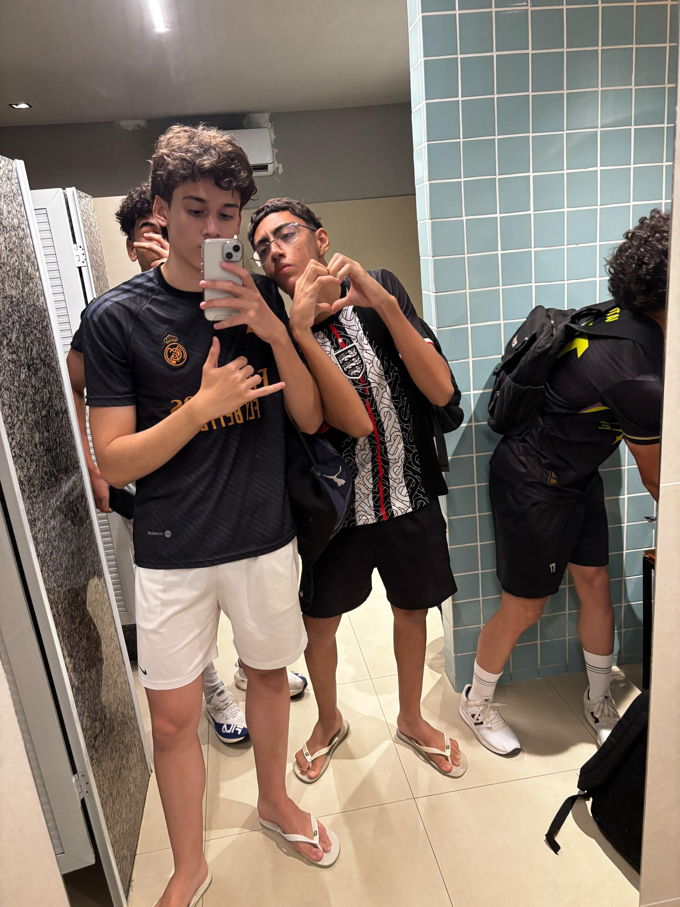

Sobre Mim

Meu nome é Gustavo e eu curso Informática na E.E.E.P Jeová Costa Lima, em Russas. Escolhi esse curso porque desde pequeno gosto de tecnologia e queria aprender a criar coisas do zero, tanto a parte visual quanto a parte de lógica.
Sempre me interessei por tecnologia, principalmente na minha infância, em que aprendi a usar tablets, celulares, computadores, etc. Eu queria aprender como tudo isso funcionava, então não pensei duas vezes em escolher Informática. Mesmo tendo pouca experiência (apenas sabia alguns conceitos básicos da internet), sinto que estou aprendendo o conteúdo da escola e melhorando cada dia mais. Não é à toa que já fiz um trabalho em Python, e agora este de HTML/CSS.
Sem dúvidas, a área de programação é a área da tecnologia que mais me desperta interesse. Produzir sites, programas e tantas outras coisas é algo incrível. Atualmente estou aprendendo a organizar páginas com HTML, deixar elas bonitas com CSS/TAILWIND,vendo o começo de PHP e de Portugol e me habituando com o hardware. Quero continuar estudando para, no futuro, me formar em Engenharia de Software e trabalhar com programação.